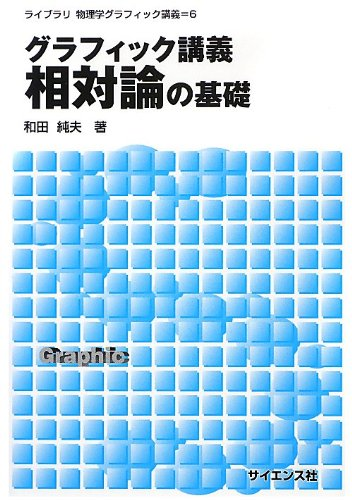
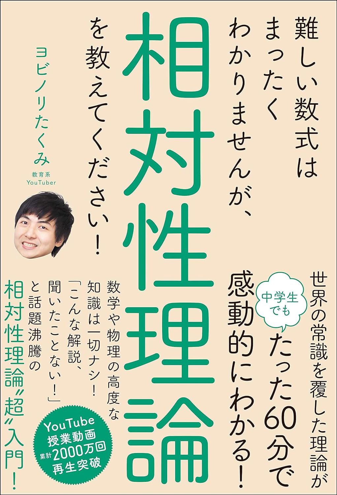

相対性理論
アインシュタインの作った理論を学びましょう。

グラフィック講義 相対論の基礎 和田純夫著
やさしいタイトルとは裏腹に、開いてみたら激ムズ。といった本は相対論に特に多いが、この本は真に優しい入門書。厚さもなく、気軽に進められる。特殊相対論だけでなく、一般相対論に関する解説もあり、テーマも興味深いものが多い。好き。

難しい数式はまったくわかりませんが、相対性理論を教えてください! ヨビノリたくみ著
速さ・時間・距離、そして三平方の定理だけを使って若きアインシュタインが作り上げた特殊相対性理論を学んでいく一冊。さまざまなジャンルのYouTuberやタレントを呼んで行った相対性理論の授業は2時間を超えるにも関わらず100万回再生を突破。その授業をもとに色々とやさしく加筆を加えました。
相対論の正しい間違え方 松田卓也・木下篤哉著
相対性理論でよくある勘違いを1つ1つ解説していく変わった本。決して読みやすくはないので、一通り別の教科書で学んだあとに手にとってみてほしい。もしもYouTube上に相対論関係の動画を出すなら、自分の勘違いで炎上しないように、そして相対論否定派に屈しないためにも必ず読んでおかなければならない1冊。